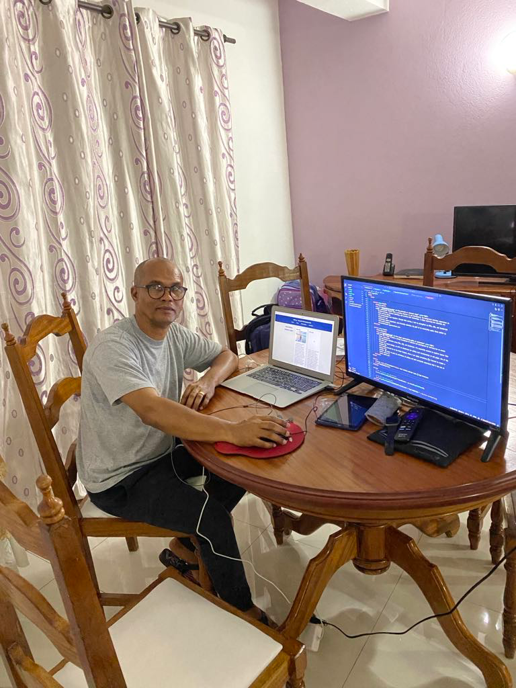

José António Andrade Lopes
About Me

I’m a passionate learner with a growing interest in web development. My background includes experience in problem-solving, creative thinking, and working with technology. I enjoy exploring how websites are built and how design and functionality come together. Through this course, I aim to strengthen my HTML, CSS, and JavaScript skills so I can confidently build responsive, user-friendly websites. My goal is to eventually apply these skills in real-world projects and professional opportunities.
My Goals

In WDD 131, I hope to build a strong foundation in dynamic web development by learning how to create clean, responsive, and interactive websites using HTML, CSS, and JavaScript. I'm especially excited to explore topics like CSS Grid and Flexbox for layout design, as well as JavaScript for adding real functionality to web pages. One of the projects I’m most looking forward to is the Final Project, where I can apply everything I’ve learned to create a website from scratch. I’m eager to grow my confidence in coding and gain practical experience that I can use in future courses or career paths.